関東の要注意雑草12種
抜いても抜いても生えてくる。ひと夏放っておいたら庭が別世界になっていた——雑草の悩みは、たいてい「相手を知らないまま戦っている」ことから始まります。じつはふえ方によって、正しい対処法はまったく違います。タネでふえる草を刈るのは有効でも、地下茎でふえる草を刈るのは逆効果になることさえある。ここでは関東でよく出会う12種を、放置するとどうなるかとなぜ根絶しにくいかで整理しました。
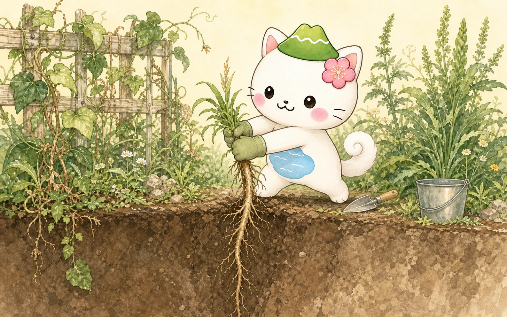
🌱 まず知るべき「ふえ方の3タイプ」
雑草対策でいちばん大事なのは、その草がどうやってふえているかを見きわめることです。ここを間違えると、労力が丸ごと無駄になります。
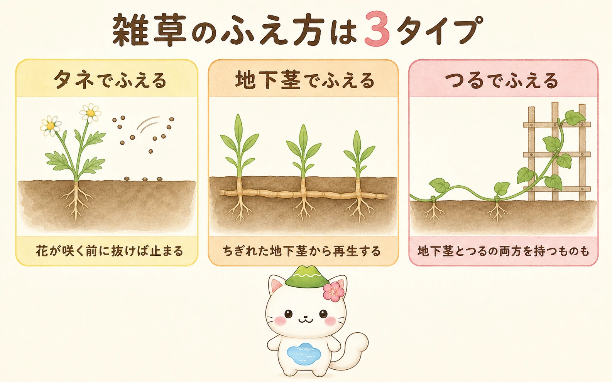
- タネでふえる（一年草）：メヒシバ、オオアレチノギク、スズメノカタビラなど。タネができる前に刈る・抜くのが正解。地上部をなくせば止まります。いちばん対処しやすいタイプ。
- 地下茎でふえる（多年草）：スギナ、ドクダミ、セイタカアワダチソウなど。刈っても抜いても、地下茎が残れば再生します。むしろ中途半端に耕すと地下茎が分断されて増えることも。ここがいちばん厄介。
- つるでふえる：ヤブガラシ、クズなど。地下茎とつるの両方を持ち、しかも他の植物に覆いかぶさって枯らします。放置の代償が最も大きいタイプ。

地下茎タイプの草を、耕運機やスコップでざくざく耕してしまうのがいちばんまずいの。ちぎれた地下茎の1本1本が、全部あたらしい株になっちゃうから。「きれいにしよう」と思ってやった作業で、かえって10倍に増えた——という話は本当によく聞くよ。
🚨 根絶がとくに難しい（地下茎・つる）
地面の下に本体があるタイプ。見えている部分は氷山の一角で、地上をきれいにしても数週間で戻ります。長期戦を覚悟して臨む相手です。
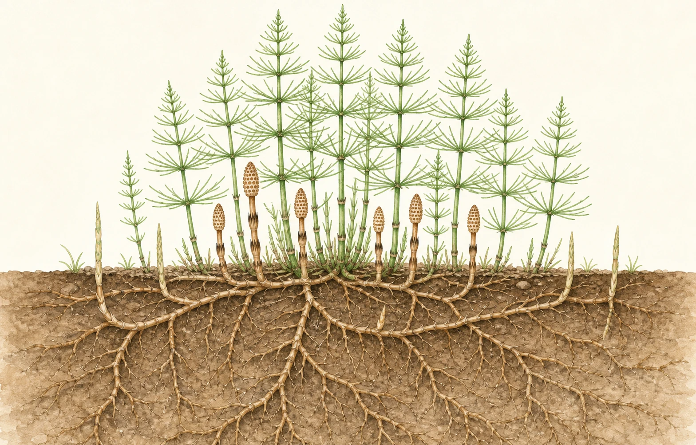
スギナ
地下茎が1m以上の深さまで潜る。雑草界の最難関。ツクシの親。
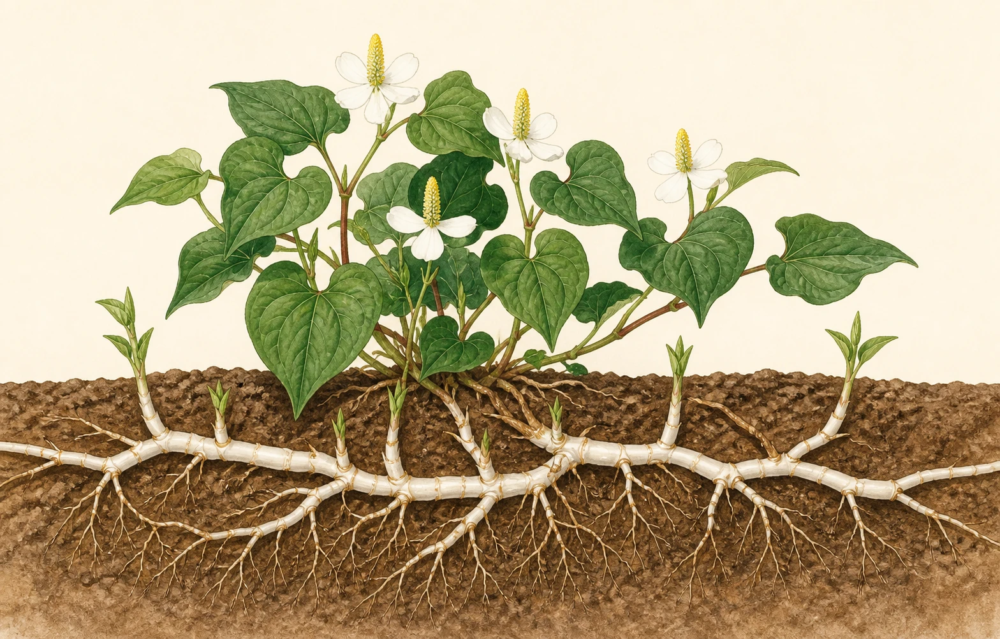
ドクダミ
白い地下茎がちぎれるたびに再生。独特のにおいで日陰にはびこる。
ヤブガラシ
名前のとおり「藪を枯らす」。庭木に巻きついて覆い、枯らしてしまう。
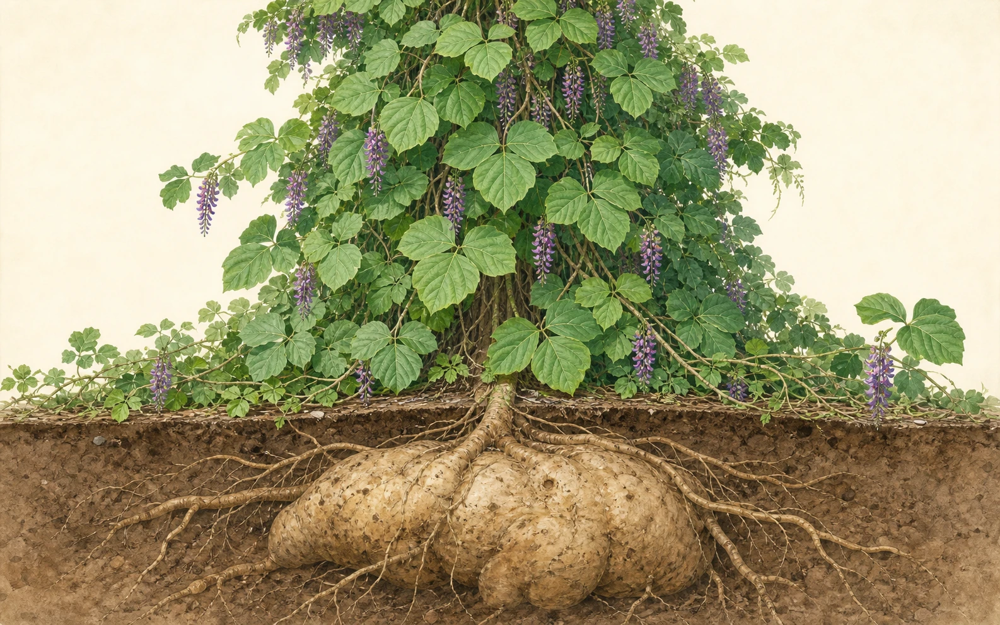
クズ
1日30cm伸び、家や木を丸ごと飲み込む。地下には巨大な芋。

セイタカアワダチソウ
地下茎＋種子＋アレロパシー（他感作用）の三段構え。空き地の主。
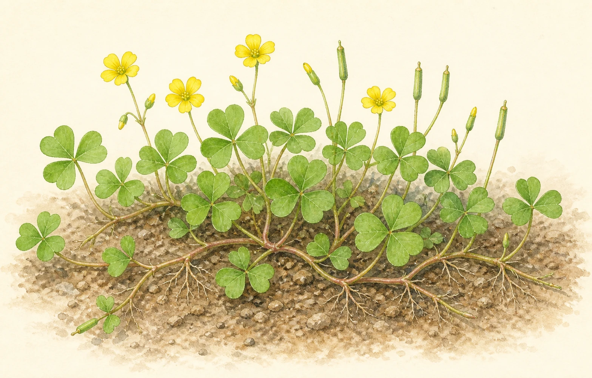
カタバミ
小さいのに手ごわい。地下の鱗茎と、実がはじけて飛ぶタネの合わせ技。
⚠️ 健康・法律に関わる（外来種など）
繁殖力だけでなく、花粉症の原因になるものや、法律で扱いが決められているものです。特に後者は、知らずに持ち帰ると罰則の対象になります。
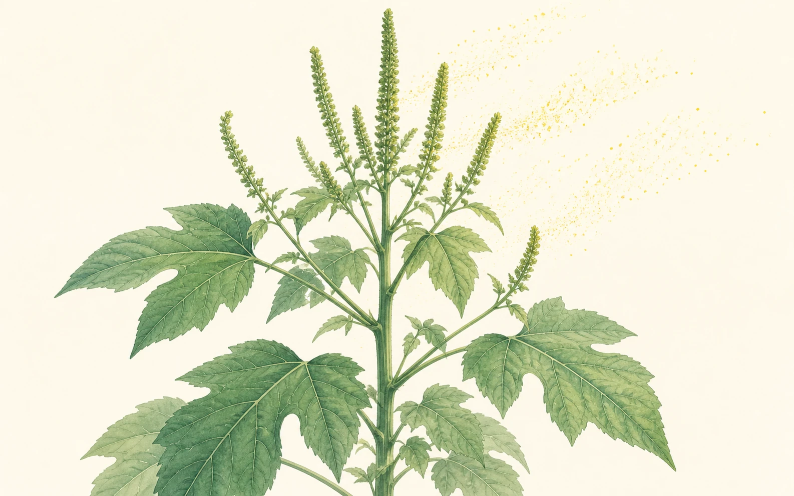
オオブタクサ
草丈3m。秋の花粉症の主犯格。河川敷に大群落をつくる。
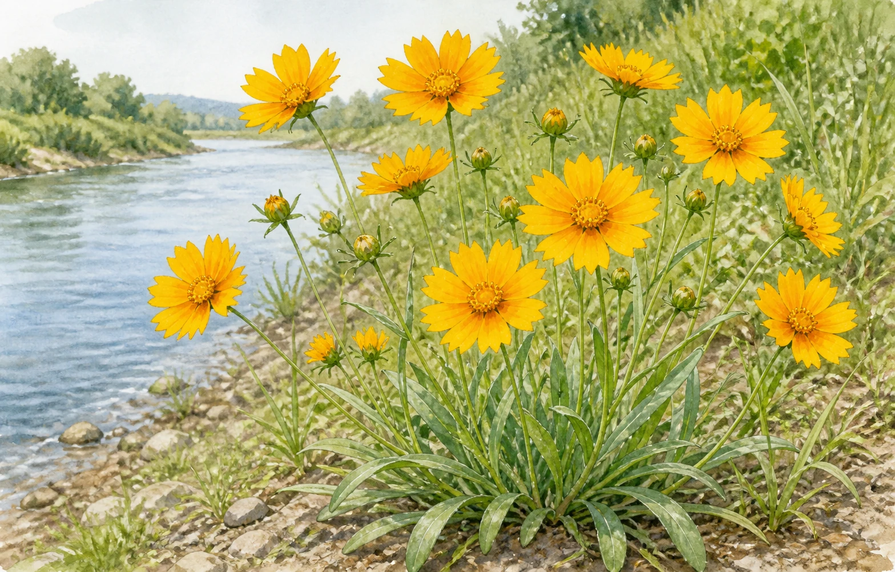
オオキンケイギク
きれいな黄色い花。でも栽培も運搬も法律で禁止されています。
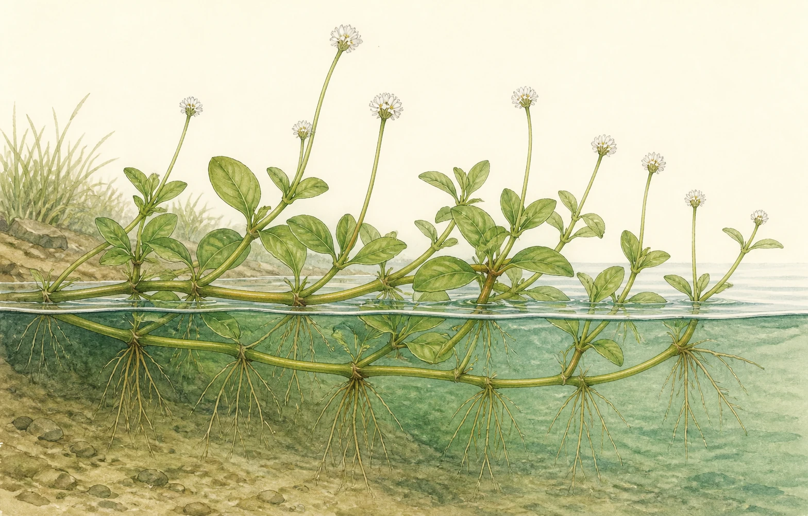
ナガエツルノゲイトウ
「地球上でもっとも危険な侵略的植物」。1cmの断片から再生する。
🌾 数で押してくる（タネでふえる）
1株が数千〜数万のタネをつけるタイプ。個々は抜きやすいので、タネをつけさせないことだけを徹底すれば、翌年から目に見えて減ります。
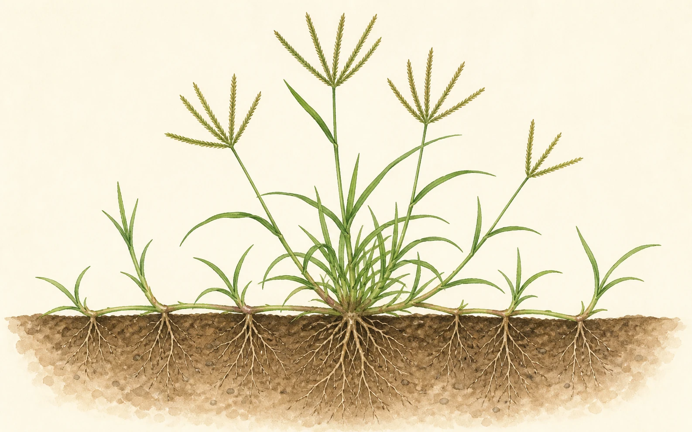
メヒシバ
夏の畑と庭の最優占種。茎が地を這い、節から根を下ろして広がる。

オオアレチノギク
1株で数万のタネ。綿毛で遠くまで飛び、空き地を一面に埋める。

スズメノカタビラ
冬でも枯れず、一年中タネをつける。舗装のすき間に必ずいる。
🧰 4つの対処法と使い分け
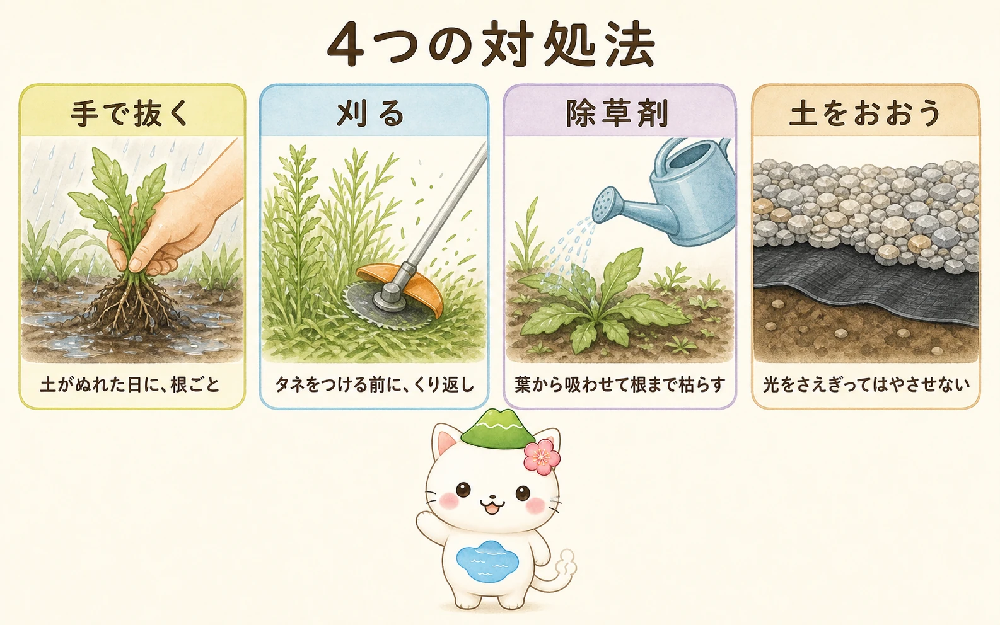
| 方法 | 効くタイプ | コツ | 注意 |
|---|---|---|---|
| 手で抜く | タネでふえる草 | 雨あがりの土がやわらかい日に、根ごと | 地下茎タイプは途中で切れると逆効果 |
| 刈る | タネでふえる草 | 花が咲く前にくり返す | 地下茎タイプは刈るだけでは減らない |
| 除草剤（茎葉処理） | 地下茎・つる | 葉から吸わせて地下茎まで枯らす | 周囲の植物にかからないように |
| 防草シート＋砂利 | ほぼすべて | 光を完全にさえぎる | すき間から出る。端の処理が肝心 |
除草剤を使うなら知っておきたいこと
- 生えている葉から吸収され、地下茎や根まで移動して枯らす。
- グリホサート系が代表。土に落ちると分解されるタイプが多い。
- 地下茎タイプにはこれが本命。
- よく晴れて生育が盛んな時期に、葉がしっかり茂った状態でかける。
- 土に成分が残り、これから生える芽を止める。
- 効果は数か月続くが、その場所に何も植えられなくなる。
- 庭木や花壇のそばで使うと、根から吸って枯らすことがある。
- 植える予定のある場所では使わない。
どちらの場合も、使う場所に登録のある製品を選び、記載された使い方を守ってください。「農耕地用」と「非農耕地用」があり、家庭菜園に非農耕地用を使うことはできません。
雑草対策でいちばん現実的なゴールは「根絶」ではなく「管理できる状態」なの。スギナを庭からゼロにするのは、正直かなり難しい。それよりタネをつけさせない・広げないを続けるほうが、労力に見合う成果が出るよ。完璧を目指して息切れするより、年に数回のペースを守るほうが結局きれいな庭になるんだ。
⚖️ 抜く前に確認：法律で扱いが決まっている草
特定外来生物に指定された植物は、外来生物法によって栽培・保管・運搬・譲渡・野外に放つことが原則禁止されています。違反すると個人で3年以下の懲役または300万円以下の罰金（法人は1億円以下の罰金）という重い罰則があります。
- 「きれいだから」と持ち帰って庭に植えるのは、はっきりと違法です。
- 抜いた株を生きたまま袋に入れて運ぶのも「運搬」にあたります。
- 正しい手順は、その場で抜いて、その場で枯らしてから持ち帰ること。枯死させれば「生きた個体」ではなくなるため、運搬にあたりません。
- この記事で扱うなかでは オオキンケイギク と ナガエツルノゲイトウ が該当します。
- 自治体によって回収方法の案内が違うので、市区町村のサイトを確認してください。
なお、オオブタクサ や セイタカアワダチソウ は特定外来生物ではなく、生態系被害防止外来種リストに載っている「対策が望まれる外来種」です。こちらは運搬などの禁止はありませんが、広げないに越したことはありません。